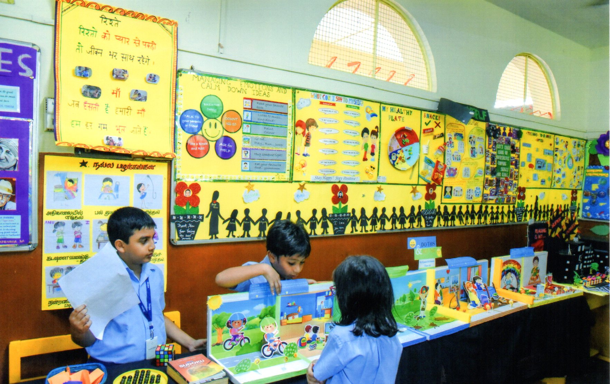

The Annual Day celebration is one of the most eagerly awaited events in our school's calendar. It is a time when we come together as a school community to celebrate the achievements, talents, and hard work of our students and staff. This special occasion showcases a vibrant mix of cultural performances, speeches, and awards that reflect the spirit and values of our institution. It is not only a platform for students to express themselves through art, music, and drama but also an opportunity to recognize academic excellence, sportsmanship, and character. We extend our warmest welcome to all the parents, guests, and dignitaries who have joined us today, and we thank you for your continuous support and encouragement. Let us celebrate this day with joy, pride, and the shared vision of a brighter future for our children.

Sports Day is a much-anticipated event in our school that brings energy, excitement, and a spirit of healthy competition. It is a day dedicated to celebrating physical fitness, teamwork, and perseverance. Through various track and field events, students get the opportunity to showcase their athletic talents and sportsmanship. Beyond winning or losing, Sports Day teaches valuable life lessons about discipline, dedication, and fair play. It also strengthens the bond between students, teachers, and parents as everyone comes together to cheer and support. We are grateful to our staff and volunteers for organizing this vibrant day, and we thank all the participants for their enthusiasm and effort. Let us continue to promote the spirit of sports and fitness in every aspect of our lives.

Inter-house events are an integral part of school life, promoting healthy competition, unity, and a strong sense of belonging among students. These events, which include sports, debates, quizzes, cultural performances, and more, encourage students to step out of their comfort zones and showcase their talents. Each house competes with enthusiasm and team spirit, aiming not just for victory but also for growth and learning. The inter-house system helps instill leadership, cooperation, and discipline, while also building friendships across different grades. It is heartening to see students supporting one another and taking pride in their house’s achievements. These events not only add excitement to the school year but also play a crucial role in the holistic development of our students.
A school exhibition is a wonderful platform for students to explore, innovate, and express their creativity across various subjects and themes. It provides an opportunity for learners to go beyond textbooks and showcase their understanding through models, experiments, charts, art, and interactive presentations. Whether it's science, art, literature, or social studies, the exhibition reflects the curiosity, hard work, and talent of our students. It also encourages teamwork, problem-solving, and confidence as students explain their projects to visitors. Parents, teachers, and guests witness the enthusiasm and potential of young minds, making the exhibition a truly enriching experience for everyone. Events like these highlight the importance of practical learning and foster a love for discovery and innovation in our school community.